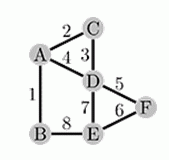
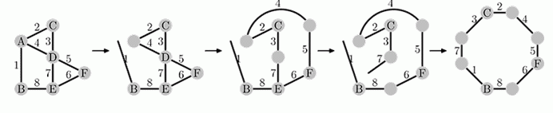

P大的基础电路实验课是一个无聊至极的课。每次实验，T君总是提前完成，管理员却不让T君离开，T君只能干坐在那儿无所事事。
先说说这个实验课，无非就是把几根导线和某些元器件（电阻、电容、电感等）用焊锡焊接起来。
为了打发时间，T君每次实验做完后都在焊接一些诡异的东西，这就是他的杰作：

T君不满足于焊接奇形怪状的作品，强烈的破坏欲驱使他拆掉这个作品，然后将之焊接成规整的形状。这会儿，T君正要把这个怪物改造成一个环形，当作自己的相框，步骤如下：

T君约定了两种操作：
1. 烧熔一个焊点：使得连接在焊点上的某些导线相分离或保持相连（可以理解为：把焊点上的导线划分为若干个类，相同类中的导线相连，不同类之间的导线相离）
2. 将两根导线的自由端（即未与任何导线相连的一端）焊接起来。
例如上面的步骤中，先将A点烧熔，使得导线1与导线2、4点分离；再将D点烧熔，使得4、5与3、7相离；再烧熔E，使7与6、8相离；最后将1、7相连。
T君想用最少的操作来将原有的作品改造成为相框(要用上所有的导线)。